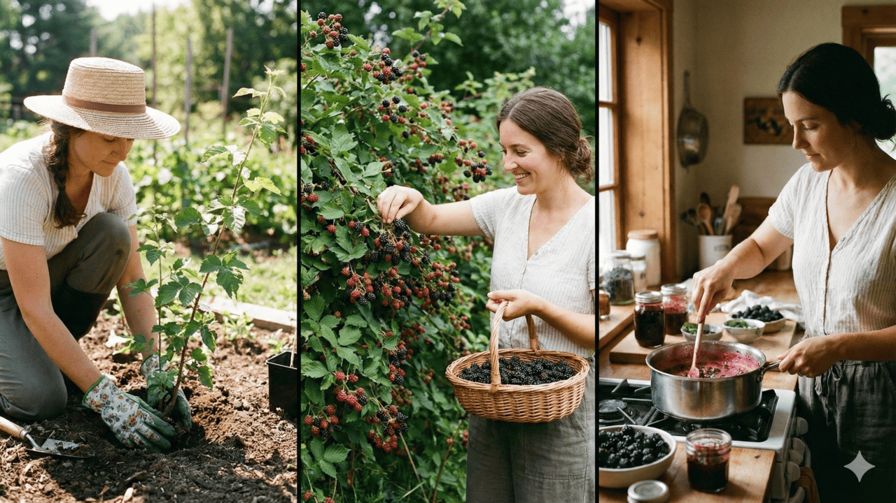

Nossa Historia
Desde 2010, do Fogão de Casa para a sua Mesa
A Amora Geleias Artesanais não nasceu em uma fábrica, mas no calor das cozinhas de nossas mães. Em Lauro de Freitas, na Região Metropolitana de Salvador, acompanhamos de perto a dedicação e o carinho com que elas transformavam frutas frescas em potes cheios de afeto.
O que começou como uma tradição familiar cresceu, mas não perdeu a essência. Hoje, assumimos esse legado com o orgulho de ser uma empresa baiana, feita de raiz e história. Nossa missão é levar até a sua mesa o sabor genuíno da Bahia, preservando o cuidado artesanal que aprendemos em casa e o amor que só uma receita de mãe possui.

Perguntas Frequentes
Por que Amora? A Origem do Nosso Nome
Muitos nos perguntam de onde vem o nome da marca. A resposta está guardada em nossas raízes e no nosso paladar. A amora sempre foi mais do que uma fruta para nós; ela representa a nossa paixão inicial.
Foi a geleia de amora a primeira a sair de nossas panelas, com sua cor vibrante e o equilíbrio perfeito entre o doce e o cítrico. Ela foi o teste de fogo que nos deu a certeza de que estávamos no caminho certo. Batizar a empresa em homenagem a essa frutinha silvestre é uma forma de nunca esquecermos onde tudo começou e o carinho que dedicamos à nossa primeira criação.
O Segredo do Ponto:
Sabia que não usamos espessantes artificiais? O brilho e a textura das nossas geleias vêm exclusivamente da pectina natural das frutas e do tempo correto de fervura.
A Primeira Receita:
Sabia que não usamos espessantes artificiais? O brilho e a textura das nossas geleias vêm exclusivamente da pectina natural das frutas e do tempo correto de fervura.
Sustentabilidade no Pote:
Nossos vidros são 100% reutilizáveis e recicláveis. Adoramos saber que nossos clientes usam os potes vazios para guardar temperos, velas ou até pequenos vasos de flores!
Suporte - Contatos
| Canal | Contato | Horário |
|---|---|---|
| (71)9818-25654 | Seg à Sex — 8h às 18h | |
| @amora | Seg à Sáb — 8h às 20h | |
| contato@amora.com | Respondemos em até 24h |